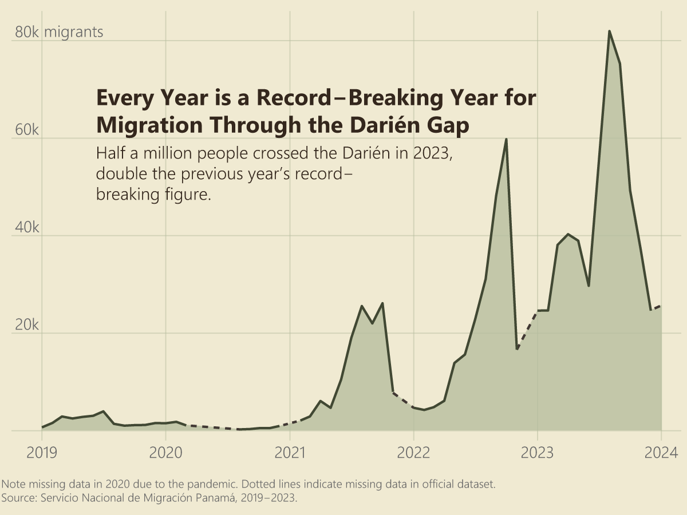
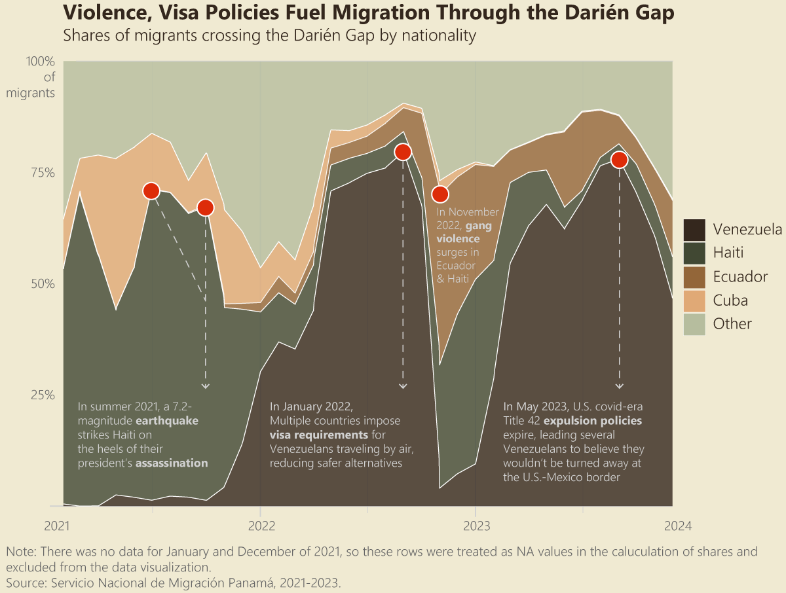

By: Anushka Srivastava

The Darién Gap is an inhospitable border region between Colombia and Panama that has in recent years become a juncture for migrants seeking a better life in the United States. The roadless region is the only interruption along the Pan-American highway that connects north Alaska to the southern tip of Chile. As a result, it serves as a mandatory transit point for hundreds of thousands of people traveling northward by land.
The 60-mile jungle—which was once deemed impenetrable by Spanish conquistadors and Scottish settlers—last year saw over half a million people in-transit. Surging migration in recent years has transformed the Darién from a remote, unpassable patch of land to a bustling corridor. This sharp increase in migrants has overwhelmed sparsely populated border communities with insufficient infrastructure, NGOs struggling to meet the demand for humanitarian aid, and the Panamanian and Colombian governments desperate to manage this massive influx of people.
The risks that migrants face on their journey through the lawless jungle are compounded by the presence of organized criminal groups as well as the rough physical terrain. Predators lurk, people slip off steep cliffs, and rushing tides can sweep away entire groups of migrants. Once in the jungle, there is no cell service, so people are forced to rely on themselves, the strangers with whom they begin this journey, and their smugglers—or "guides" —as they refer to themselves locally. Many people are extorted, abused, sexually assaulted, and some even die.
Source: Frederico Rios, NYT
But where are these people coming from and why now? Last year, three nationalities accounted for about 85% of all migration through the Darién: Venezuela, Ecuador, and Haiti. This recent rise in migration is due to two factors: rising instability in the sending countries coupled with restrictive immigration policies.
An array of crises have struck Haiti, Venezuela, and Ecuador including violence, economic collapse, and natural disasters. But instability in these countries is not new, and migrants usually take safer routes to reach the U.S. In the past, people have flown to countries like Mexico or Costa Rica before making their way to the U.S.-Mexico border where they would apply for asylum. However, the U.S. has responded by pressuring these “transit” countries to tighten visa restrictions on nationalities who are arriving at the border in large numbers. In other words, visa restrictions prevent migrants and asylum seekers from flying to their final destination, forcing many to resort to the dangerous overland route through the Darién.
Another worrisome trend: more children are taking this perilous route. Last year half the children who crossed the Darién were under the age of 5. Additionally, the number of unaccompanied children rose to 3,000 unaccompanied minors and separated children—tripling the previous year’s figure. In many cases, families who can’t afford to bring everyone through the journey leave their kids in camps, hoping to send them money and reunite later on.
Policymakers in the United States, Colombia, and Panama must turn their attention to the Darién Gap. Restrictive immigration policies championed by the U.S. and enacted by various countries are not actually reducing migration; they are simply forcing people to flee their desperate circumstances via more dangerous routes.
Source: Fernando Vergara, AP
As more people are driven away from their homes by national crises, migration will continue to rise. Alongside efforts to find solutions locally, governments must tackle the underlying reasons behind migration, like poverty, violence, and insecurity in the home countries. Moreover, it's crucial for governments to raise funds to help integrate migrants into societies across Latin America. In doing so, they can address this volatile and dangerous situation and create a new, positive transformation of the Darién Gap.
Source: Luis Acosta, Getty Images
A quick note on methodology; there is an endemic issue with data on unauthorized migrants crossing the Darién. The figures I have used to create these visualizations are sourced from the official Panamanian government website. These numbers are likely inaccurate since migrants attempting to irregularly transit tend to avoid the authorities and fly under the radar of detection. As such, the reader is advised to note that the exact figures may be underestimated, but the general trends of increasing migration and disproportionate composition of nationalities are still sound.
This website is the final project for DATA 1500, taught by Professor Reuben Fischer-Baum at Brown University. Anushka Srivastava is a graduating senior studying international and public affairs and data science. This data story grows out of a research project on assessing and addressing the humanitarian needs and drivers of migration in the Darién Gap. She has also published an op-ed on the smuggler economy in Colombian and Panamanian border towns.